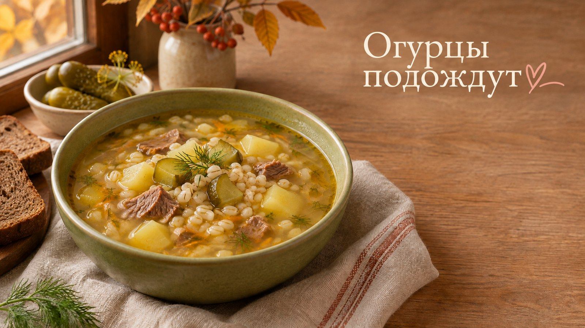
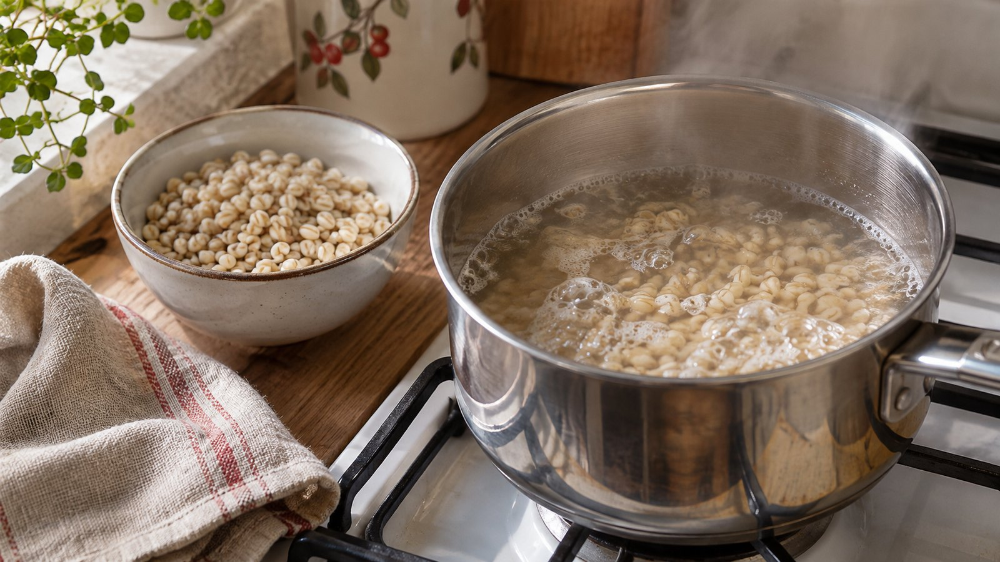
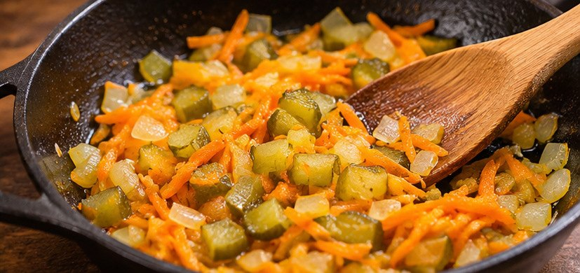

Рассольник с перловкой: когда добавлять солёные огурцы

Стоит поставить на плиту рассольник, и на кухне сразу становится уютнее. Впереди горячая тарелка с перловкой, мягким мясом, приятной кислинкой и, конечно, ложкой сметаны. К такому обеду даже придумывать ничего не нужно: кусочек ржаного хлеба рядом, и всё на своих местах.
Но бывает досадная мелочь. Суп уже почти готов, перловка мягкая, а картофель всё ещё плотный, сколько его ни вари. Часто дело в том, что солёные огурцы отправились в кастрюлю слишком рано.
Огуречная кислинка может замедлять размягчение картофеля. Поэтому здесь лучше не торопиться. Пусть у каждого продукта будет своя очередь, тогда рассольник получится и наваристым, и по-домашнему нежным.
Продукты для хорошего домашнего рассольника
На пять-шесть порций возьмите:
- Говядину на косточке, около 500 г - Воду, примерно 2,5 л - Перловую крупу, 80 г - Картофель, 3 средние штуки - Солёные огурцы, 2–3 штуки (около 200 г) - По одной луковице и моркови - Растительное масло, 1–2 столовые ложки - Огуречный рассол, 2–4 столовые ложки по желанию - Лавровый лист, чёрный перец, соль, укроп и сметану
Здесь лучше всего подходят именно солёные огурцы, без сладковатого маринада. У маринованных вкус другой, особенно если в банке много уксуса и сахара. Рассольник с ними тоже возможен, но привычный аромат будет не совсем тот.
Крупе нужна собственная кастрюлька
Говядину залейте холодной водой и поставьте на огонь. Как только закипит, уберите пену и уменьшите нагрев. Бульону не нужно бурлить на всю кухню: достаточно тихого, едва заметного кипения.
Обычно говядина на косточке становится мягкой за полтора-два часа, иногда дольше. Но лучше проверить мясо вилкой: кусочек должен легко отделяться от кости. Если вода выкипает, подлейте немного кипятка.
А перловке можно устроить собственную маленькую кастрюльку. Промойте крупу и сварите в чистой воде почти до готовности. В зависимости от сорта и обработки это займёт примерно 40–60 минут. Тогда она не отдаст основную часть крахмала в мясной бульон, и суп получится прозрачнее.

Если есть время, перловку можно заранее замочить. Не успели? Ничего страшного. Это не тот случай, когда из-за забытой с вечера миски нужно отменять обед. Просто дайте крупе свариться и пробуйте её на мягкость.
На сковороде уже пахнет рассольником
Лук нарежьте мелко, морковь натрите или порежьте тонкой соломкой. На небольшом количестве масла обжарьте овощи минут пять-семь, пока лук не станет мягким, а морковь не раскроет свой сладковатый аромат.
Солёные огурцы нарежьте небольшими кубиками и положите в ту же сковороду. Пара ложек бульона, ещё семь-десять минут на слабом огне, и зажарка уже пахнет настоящим рассольником.

Вот здесь очень хочется сразу отправить её в суп. Но пусть немного подождёт. Картофель, в отличие от огурцов, такую поспешность не любит.
Даём картофелю немного времени
Когда мясо сварилось, выньте его, уберите кости и нарежьте кусочками. При желании процедите бульон, а затем опустите в него картофель, нарезанный привычными кубиками.
Через 12–15 минут попробуйте кусочек. Он должен быть мягким внутри, но ещё не разваливаться. Если картофель плотный, дайте ему несколько минут: размер нарезки и сорт всегда немного меняют время.
Теперь можно собирать всё вместе. Верните мясо, добавьте перловку и овощи с огурцами. Пусть рассольник тихонько покипит ещё пять-десять минут.
С рассолом лучше не спешить. Сначала попробуйте суп: иногда солёных огурцов хватает с запасом. Если кислинки маловато, влейте пару ложек рассола, размешайте и попробуйте ещё раз.
И только после этого досаливайте. Огурцы бывают очень разными, и лишняя соль здесь совершенно ни к чему.
Горячая тарелка и ржаной хлеб
В самом конце добавьте лавровый лист и чёрный перец. Через несколько минут выключите плиту, выньте лавровый лист и оставьте кастрюлю под крышкой на 10–15 минут.
Это как раз то время, за которое можно нарезать хлеб, достать сметану и позвать всех к столу. Суп немного настоится, а вкус станет более цельным.
Рассольник особенно хорош горячим, с укропом и небольшой ложкой сметаны. А на следующий день он нередко становится гуще: перловка продолжает впитывать жидкость.
Разогревайте нужную порцию, при необходимости добавив немного воды или бульона. Остальное после остывания без долгого ожидания уберите в холодильник.
В этом супе нет сложного секрета. Просто перловка готовится отдельно, картофель успевает стать мягким, а огурцы приходят чуть позже. И всё складывается в тот самый уютный домашний обед.
Если вам близки такие рецепты с небольшими, но полезными подробностями, оставайтесь с «Красиво жить». Будем разбираться в привычных блюдах без лишних сложностей.
А вы любите рассольник погуще, чтобы ложка почти стояла, или побольше ароматного бульона?